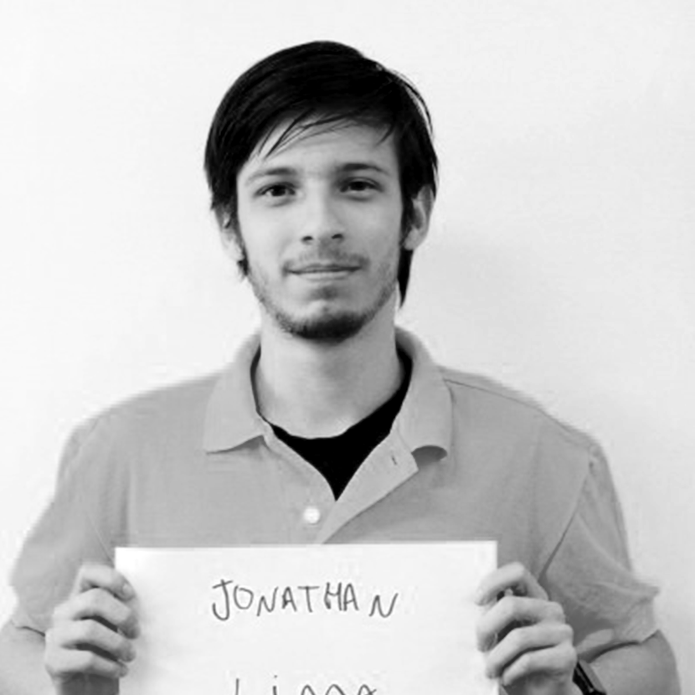

DISCOVER THE FUTURE OF THE ERLANG AND ELIXIR ECOSYSTEM
CODE BEAM SF 2020Our speakers

José Valim
Creator of the Elixir programming language, Chief Adoption Officer at Dashbit
Keynote:
01 Mar / 09.05 / OK BEAMerTyler Bettilyon
Writer, educator, engineer, and founder of Teb's Lab
Keynote:
01 Mar / 17.05 / OK BEAMerRenee Orser
VP of Engineering at NS1
Keynote:
Designing an engineering org for SaaS and on-prem delivery models
28 Feb / 09.15 / OK BEAMer
Miriam Pena
Voted one of the women to watch in tech by Women 2.0
Introducing the Erlang Ecosystem Foundation
28 Feb / 17.45 / OK BEAMer
BEAM Extreme; Don't try this at home!
01 Mar / 10.35 / OK BEAMer
Jacqueline Manzi
Engineering Manager and seasoned Full Stack software engineer at Mux
Using OTP: presence to power real-time analytics
01 Mar / 14.30 / BEAMenial

Fred Hebert
Erlang, Tools, and Systems (Postmates)
Introducing the Erlang Ecosystem Foundation
28 Feb / 17.45 / OK BEAMer
28 Feb / 14.40 / OK BEAMer
Hannah Howard
Programmer and life long iconoclast
Go vs Elixir: A concurrency comparison
01 Mar / 16.15 / OK BEAMer

Anna Neyzberg
Co-founder of ElixirBridge
Go vs Elixir: A concurrency comparison
01 Mar / 16.15 / OK BEAMer

Nuwan Wijerathne
Tech-Lead at Global Wavenet
Building high performance modularization architecture in short messaging systems
01 Mar / 10.35 / BEAMenial

Barbara Chassoul
Software engineer at Peer Stritzinger GmbH
Applied AI research with StarCraft, Torch and the BEAM
28 Feb / 12.25 / OK BEAMer
Jean Chassoul
Software designer
Applied AI research with StarCraft, Torch and the BEAM
28 Feb / 12.25 / OK BEAMer
Veronica Lopez
Member of the Kubernetes Core Team
Containers & orchestration: The Elixir way
01 Mar / 12.15 / OK BEAMer
Brujo Benavides
🧙♂️ Oxbow Code Killer 🔥
OTP behaviours and how to behave around them
28 Feb / 11.35 / OK BEAMer
Igors Istocniks
Software engineering manager at WhatsApp
How WhatsApp moved 1.5B users across data centres
01 Mar / 11.25 / OK BEAMer

Richard Carlsson
Author of Eunit and other tools, co-author of Erlang and OTP in Action
The art of the live upgrade - lessons from 10 years of evolving a live system
28 Feb / 10.45 / Gen X

Stavros Aronis
Developer & Trainer at Erlang Solutions
Modeling and verifying distributed applications with Concuerror
01 Mar / 13.40 / OK BEAMer

Robert Carbone
Visualizing the BEAM will Change the World
Composing in style: an introduction to wxErlang's StyledTextCtrl
28 Feb / 15.30 / Gen X
Tian Chen
VPE, Technical Writer, Elixir Enthusiast
Create a decentralized database with ExAbci and Tendermint
28 Feb / 16.25 / Gen X
Benoit Chesneau
Edge computing artisan
Barrel, keep your data in sync in your Erlang application
01 Mar / 12.15 / BEAMenial

Sean Cribbs
Experienced tech leader and long-time BEAMer
Chemanalysis: Dialyzing Elixir
01 Mar / 14.30 / Gen X
Ken Cross
Software Engineer at HelloSign
Using Distillery: understanding OTP releases
01 Mar / 16.15 / Gen X

Adrian Cruz
Search, discovery and personalization software engineer
Getting results: finding what we need with Elixir
28 Feb / 13.50 / BEAMenial
Cees de Groot
Principal engineer at PagerDuty, Inc.
Clixir - mixing C and Elixir code
01 Mar / 15.20 / Gen X
Keith Elder
Technology evangelist, technologist, software engineer, speaker, trainer, and storyteller
Building a highly scalable service that survived a Super Bowl
01 Mar / 11.25 / BEAMenial

Andrea Leopardi
Elixir core team member, developer advocate, engineer at Apple
28 Feb / 10.45 / OK BEAMer
Marcin Lewandowski
Partner at Software Mansion
Membrane framework - bringing BEAM into world of multimedia and streaming
28 Feb / 13.50 / Gen X
Maxim Fedorov
Performance & scalability engineer
Mid-air airplane repair: troubleshooting at WhatsApp
28 Feb / 13.50 / OK BEAMer

Jonathan Lima
Software developer at Brex
Building a credit card issuer with Elixir
01 Mar / 16.15 / BEAMenial


David Lucia
Using Elixir to turn every moment of a sporting event into a betting opportunity
Refactoring Elixir for maintainability
28 Feb / 17.15 / BEAMenial
Jay Nelson
Proselytizes "the Erlang way" for apps in telecoms, electronic payments, secure texting, and ad delivery
Monitoring environment stability with Erlang
28 Feb / 12.25 / Gen X
Rodrigo Nonose
Curiosity-driven developer experienced in multiple languages
28 Feb / 15.30 / BEAMenial
Matthew Nowack
Senior backend engineer at Discord
ZenMonitor: scaling distributed monitoring at Discord
01 Mar / 10.35 / Gen X
Connor Rigby
Embedded systems engineer at Farmbot, Inc
Functional farming with Nerves
28 Feb / 12.25 / BEAMenial

Peer Stritzinger
GRiSP Inventor, Distributed Computing in IoT and everywhere
Introducing the Erlang Ecosystem Foundation
28 Feb / 17.45 / OK BEAMer
Erlang Distribution via UDP combined with Ethernet TSN
01 Mar / 14.30 / OK BEAMer
Andrew Thompson
Author of Lager and Gen_smtp, Rebar and Riak Contributor
Erlang logging for the 21st OTP
01 Mar / 11.25 / Gen X
Brian Troutwine
Low-level systems engineer on the Dropbox Performance team. Has thoughts about spacecraft.
Fantastic voyage III: Destination BEAM
28 Feb / 15.30 / OK BEAMer
Andrei Soroker
Director of Product at 8x8
The art of the BEAM: How to replace the JVM and not get fired
28 Feb / 14.40 / BEAMenial
Zurab Davitiani
Feature flagging enthusiast, wrote an Erlang/Elixir SDK client for LaunchDarkly
Feature flagging in Erlang using LaunchDarkly
28 Feb / 17.15 / Gen X


Christopher Meiklejohn
Carnegie Mellon University Ph.D student
Partisan: testable, high performance, large scale distributed Erlang
01 Mar / 13.40 / Gen X

PROGRAMME COMMITTEE


VENUE
Hyatt Centric Fisherman's Wharf
555 NORTH POINT STREET
SAN FRANCISCO
CALIFORNIA
USA 94133
OUR SPONSORS
Diversity & Inclusion Sponsors


Media